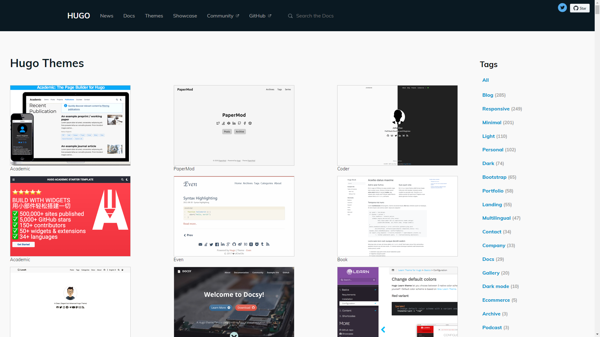
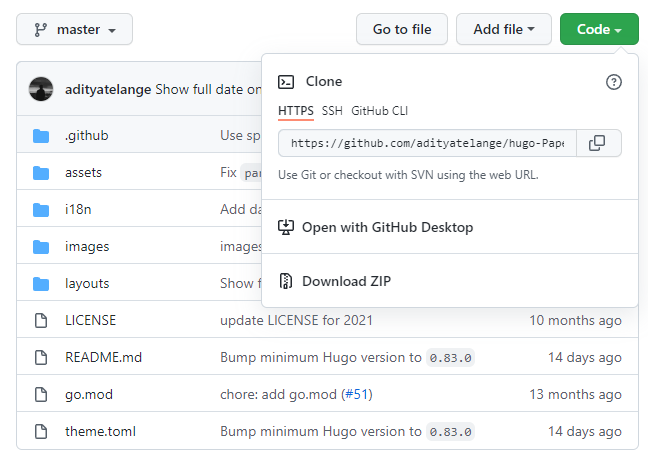
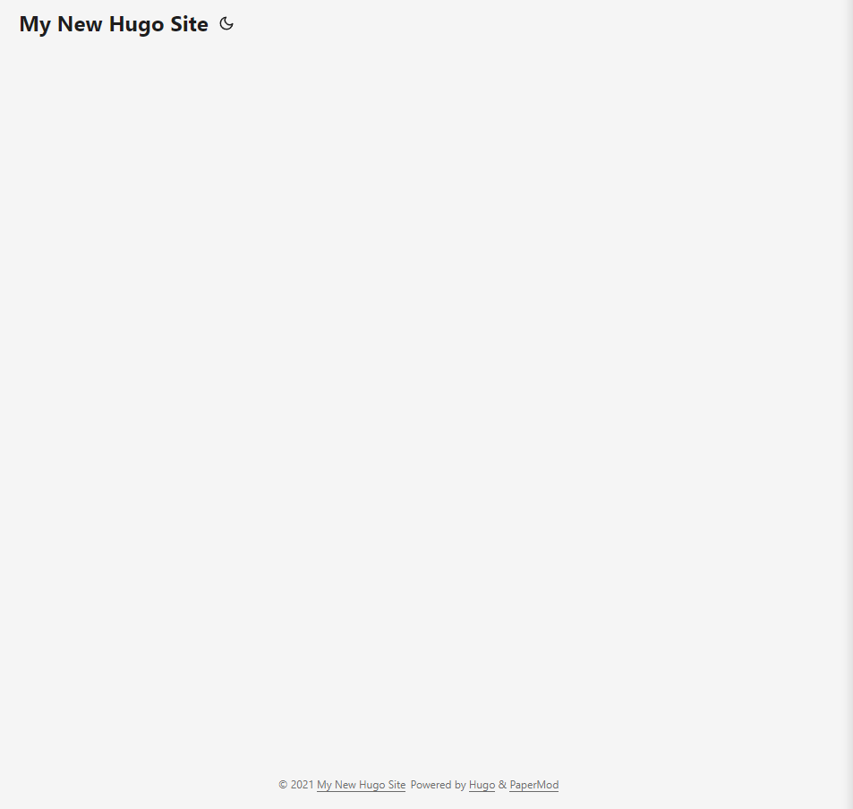
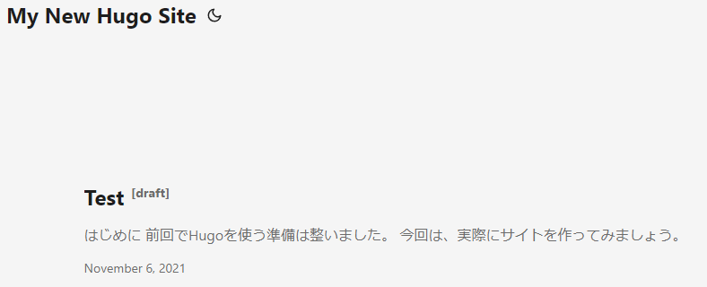
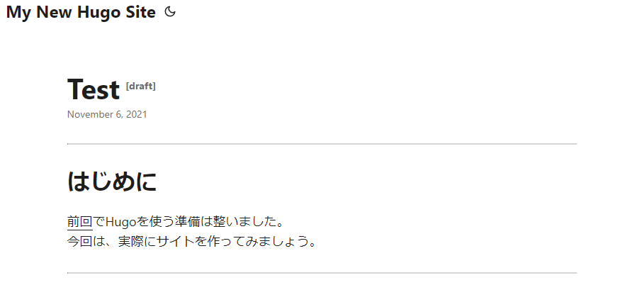
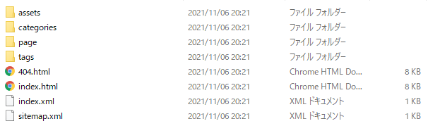

はじめに
前回でHugoを使う準備は整いました。
今回は、実際にサイトを作ってみましょう。
サイトの作成
Hugoの作業用フォルダに、サイト用のフォルダ「Sites」を作ります。
Hugo
| -hugo_(ver.)_Windows-64bit
| | -bin
| | | -hugo.exe
| | | -LICENSE
| | | -README.md
| |
| -Sites
Hugoの操作は「コマンドプロンプト」から行います。
まずはcdでカレントディレクトリを「Sites」に変更します。cd C:/Hugo/Sites
サイトを作成するときはhugo new site サイト名を実行します。
すると現在のディレクトリに「サイト名」のフォルダが生成されます。
サイト名は何でもいいですが、ここでは「MySite」とします。
では実行してみます。hugo new site MySite -f yml
急に-f ymlって変なのがくっついてる！と思うでしょうが焦らないで下さい。
これはサイト生成のオプションを付け足しただけです。
意味は「サイトの設定を記述するconfigファイルをYML形式にしてね」です。
テーマによってconfigファイルの形式が違います。これから例に説明する「PaperMod」という
テーマがYML形式だったのでこのオプションを付けています。hugo new site
後で詳しく説明するので、今はなんとなく読み飛ばして下さい。
Sites
| -MySite
| | -archetypes
| | -content
| | -data
| | -layouts
| | -static
| | -themes
| | -config.yml
たったこれだけでサイトが出来ました。
「MySite」以下に生成されたファイル群の概要は次の通りです。Directory Structure
archetypes
hugo newコマンドでコンテンツを作成するときのアーキタイプを格納するディレクトリ
content
コンテンツを格納するディレクトリ。ここで記事を作る。
data
色々なデータを保存するディレクトリ。
layouts
HTML生成時のレイアウト設定などのテンプレートを格納するディレクトリ。
static
画像、CSS、JavaScriptなどのすべての静的コンテンツを格納するディレクトリ。
themes
テーマを格納するディレクトリ。
config.yml
サイトの様々な設定を記述するファイル。形式はtomlかymlかjson
あとは基本的にはcontent以下でMarkdownを書くだけで記事を作っていけます。
他のディレクトリはサイトを細かくカスタマイズしていく際に触ってみてください。
ひとまずこれでサイトの作成が出来ました！
テーマの適用
次はテーマを選びましょう。Hugoには様々なテーマが公開されています。
Hugo Themesを訪れて、好みのテーマを選びましょう！

魅力的なテーマが多くてなかなか決められませんね。笑
ここで１つテーマ選びで大切なことがあります。
Hugoのテーマで決まるのはデザインだけではないということです。
サイトの機能面もテーマによって決まります。正確には、初めから提供されている機能がテーマによって違います。例えば、最終更新日の表示、カテゴリー別表示、検索機能などです。
Hugoには、最終更新日の設定や、タグ・カテゴリーといった機能自体は存在します。
しかし、それをサイトに反映しようと思うと自分で実装しなくてはなりません。
これは、設定ボタンON！OFF！みたいに簡単にはいきません。
Hugoに慣れてきたら自分でカスタマイズして追加も出来ますが、初心者にはハードルが高く時間もかかるでしょう。なので、ある程度は機能面も考慮してテーマを選ぶのが良いでしょう。
良さそうなテーマを見つけたら「demo」や「example」と書かれた場所からデモサイトを見ることが出来ます。特徴を文字で説明されても何のことかよく分からないでしょう。実際にデモサイトを触ってみることをおすすめします。
ここでは「PaperMod（デモサイト）」というテーマを例に説明していきます。
このサイトもPaperModを使用しています。
テーマのダウンロード
テーマを決めたらありがたく使わせて頂きます。ダウンロードしましょう。
Downloadをクリックし、GitHubに移動したら、codeからzipをダウンロードします。

中身を展開し、MySite/themes 以下に配置しましょう。この時、フォルダ名を
「hugo-PaperMod_master」から「hugo-PaperMod」に変更してください。
MySite
| -archetypes
| -content
| -data
| -layouts
| -static
| -themes
| | -hugo-PaperMod
| -config.yml
configファイルの設定
ダウンロードが済んだら、サイトにテーマ適用の設定をします。configファイルをテキストエディタで開きます。
|
|
ここにthemeの記述を追加します。
|
|
これでテーマの適用が完了しました。簡単！
（補足）configファイルの形式
Hugoではサイト設定ファイルであるconfigの形式を、「toml」か「yml」か「json」で記述することになっています。デフォルトでは「toml」です。Configure Hugo
何が違うかというと、文法が違うだけです。
これからテーマとconfigをカスタマイズするにあたって、テーマが公開しているデモサイトのconfigファイルを参考にしたりコピーしたりします。この時、文法の違いを気にしたくないですし、それが原因のエラーも起こしたくありません。
テーマが使う形式に合わせておけば何かと分かりやすいので、サイト生成時に-f ymlをオプション設定しました。理由はたったこれだけです。
ローカルでプレビュー表示
ここまでで、テーマの適用が出来たサイトが生成されています。でも実際に見てみないと上手くいっているかわかりませんよね？Hugoにはサーバー機能があります。
コマンドプロンプトでcd C:/Hugo/Sites/MySiteでカレントディレクトリを「MySite」に変更しhugo serverを実行してみましょう。
上手くいっていれば、ブラウザで http://localhost:1313/ にアクセスするとサイトを見ることが出来ます。
まだ記事が無いので、恐らく真っ白です。笑
このように表示されていればテーマの適用が出来ています。

確認出来たら一旦停止させましょう。コマンドプロンプトで Ctrl + C で停止です。
記事の作成
では試しに記事を１つ作成しましょう。コマンドプロンプトでhugo new ファイル名を実行します。この時ディレクトリも同時に指定出来ます。では、hugo new posts/test.mdを実行してみましょう。
MySite
| -archetypes
| -content
| | -posts
| | | -test.md
| |
| -data
| -layouts
| -static
| -themes
| | -hugo-PaperMod
| -config.yml
このようにcontent以下に新しくファイルが生成されます。ディレクトリが無かった場合は自動的に作ってくれます。test.mdの中身を見てみましょう。
|
|
この---で囲まれている部分は「フロントマター」といいます。ここに記事ごとの設定を記述出来ます。設定項目はFront Matterに詳細があります。
では7行目から記事の本文を書いていきましょう。以下のように記述します。
|
|
このページの実際の書き出しです。書けたら変更を保存し、サーバーを起動しましょう。
hugo serverです。覚えていましたか？
どうでしょうか？白紙のトップページのままですね。なぜかというと、フロントマターのdraftがtrueになっている（つまり、下書きに設定されている）からです。
コンテンツを表示するには、「draftをfalseにする」または「hugo server -Dでサーバーを起動する」のどちらかが必要です。-Dというのはオプション設定で、意味は「下書きのコンテンツもビルドする」です。hugo server
コンテンツ製作中はhugo server -Dでサイトを確認し、完成したらdraftをfalseにするのが良いと思います。ではhugo server -Dを実行してみましょう。
 
テーマのカスタマイズはしていないので、本サイトと細かいデザインの違いはありますが、ちゃんと記事が出来ています！
静的ファイルを出力する
せっかく記事を作ったのにローカル環境でhugo server実行中しか見られないのは寂しいですよね。サーバーを起動してサイトやページに問題がなければ、hugoコマンドを実行しましょう。
hugoを実行すると、MySiteにpublicディレクトリが生成され、その下にHTMLなどの静的ファイルが出力されます。

ただし、draftがtrueのコンテンツはビルドされません。なので記事が完成したらdraftをfalseにしてhugoを実行するという流れが良いでしょう。
publicフォルダをまるごとサーバーにアップすればサイトを公開できます。
このサイトはGitHub Pagesで公開していますが、ホスティングの方法は色々あるようです。Hosting & Deployment
GitHub Pagesでの公開は次回説明します。